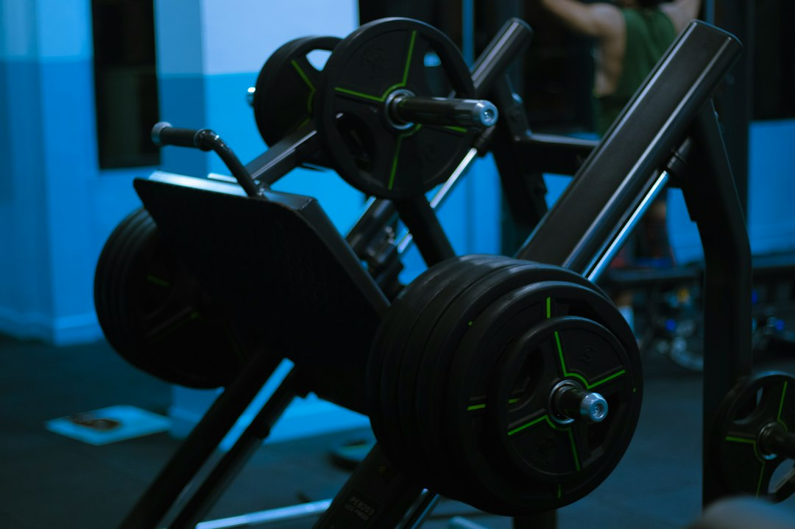

Come Ridurre Sprechi di Tempo e Costi nelle Palestre con AresAI: Guida Operativa per Personal Trainer e Atleti

Come Ridurre Sprechi di Tempo e Costi nella Gestione Quotidiana di Palestre e Centri Fitness con AresAI
- La gestione manuale di carichi, serie e alimentazione nei centri fitness genera inefficienze e sprechi temporali considerevoli.
- L’assenza di soluzioni digitali native limita il potenziale di personal trainer, coach e atleti nelle loro performance quotidiane.
- AresAI propone un sistema integrato di Voice Coach su QR Code e Dieta fotografica multimodale, ottimizzando tempi, costi e qualità del servizio offerto.
Analisi Approfondita della Notizia e Implicazioni Operative
Nel settore fitness, personal trainer, palestre e coach affrontano quotidianamente la sfida di gestire i dati di allenamento e alimentazione dei propri clienti in modo rapido ed efficace. La prassi consolidata prevede che durante le sessioni si debbano digitare manualmente carichi, ripetizioni e serie, mentre la gestione nutrizionale richiede un tracciamento meticoloso di calorie e macronutrienti. Questa routine, oltre a risultare noiosa, comporta un dispendio eccessivo di tempo che riduce la concentrazione sul training e la qualità del coaching.
La notizia del momento evidenzia proprio come questo problema stia diventando un freno operativo per il settore fitness, causando un aumento dei costi di gestione e un calo nell’efficienza del lavoro. In un’epoca in cui l’automazione e l’intelligenza artificiale stanno rivoluzionando ogni ambito lavorativo, l’assenza di strumenti digitali nativi per la gestione di carichi e alimentazione si traduce in un significativo gap competitivo per palestre e personal trainer.
Le Conseguenze e i Costi di Non Agire
Il persistere della gestione tradizionale manuale produce diversi effetti negativi. Primo, il tempo perso a inserire dati è tempo sottratto all’attività di coaching e al rapporto diretto con l’atleta, un valore intangibile ma cruciale per la fidelizzazione e il successo dei programmi personalizzati.
Secondo, la distrazione generata dalla digitazione continua durante l’allenamento può compromettere la qualità delle performance, aumentando il rischio di errori e demotivazione. Terzo, tracciare calorie e grammi degli alimenti con metodi tradizionali è spesso noioso e inaffidabile, incidendo negativamente sulla compliance del cliente al piano nutrizionale.
Infine, in assenza di un sistema integrato e automatizzato, il costo operativo per le palestre cresce considerevolmente: più tempo improduttivo, più errori, più personale necessario a gestire manualmente le informazioni. La combinazione di questi fattori si traduce in una perdita di competitività e marginalità minore per il settore.
Come AresAI Risolve il Problema
AresAI di RM Studio offre una soluzione innovativa e integrata progettata specificamente per personal trainer, palestre, fitness coach e atleti, con l’obiettivo di eliminare sprechi e inefficienze nella gestione del training e dell’alimentazione.
La prima funzionalità chiave è il Voice Coach H24 fruibile tramite QR Code posizionato sui rack in sala pesi. Questo sistema consente agli utenti di dettare i carichi, le serie e le ripetizioni in tempo reale, senza mai interrompere l’allenamento o distrarsi digitando su dispositivi. La tecnologia vocale elimina ogni frizione, migliorando l’esperienza utente e aumentando la precisione nella registrazione dei dati di allenamento.
In parallelo, la Dieta fotografica multimodale istantanea rivoluziona la gestione nutrizionale: basta uno scatto fotografico al piatto per ricevere una analisi dettagliata delle calorie e dei macronutrienti, senza bisogno di interminabili inserimenti manuali o app di terze parti. Questa soluzione facilita l'aderenza al piano alimentare e permette al coach di monitorare costantemente i progressi in modo affidabile e rapido.
L’adozione di AresAI consente quindi una drastica riduzione dei tempi persi in attività accessorie, abbattendo i costi di gestione e aumentando la produttività complessiva di ogni sessione di allenamento e di consulenza nutrizionale. L’offerta flessibile di abbonamenti, con Atleta PRO a 19€/mese e Coach Hub a 99€/mese, rende accessibile questa tecnologia a tutte le dimensioni di business nel settore fitness.
| Aspetto | Gestione Tradizionale | Con AresAI |
|---|---|---|
| Inserimento dati allenamento | Manuale, digitazione continua, rallentamenti e distrazioni | Voice Coach H24 tramite QR Code, registrazione vocale istantanea e senza interruzioni |
| Gestione alimentazione | Tracciamento noioso e poco accurato, inserimenti manuali di calorie e grammi | Dieta fotografica multimodale con analisi immediata da una semplice foto |
| Tempo perso in attività accessorie | Alto, riduzione della qualità del coaching e del training | Drastica riduzione, focus totale su allenamento e motivazione |
| Costi di gestione | Elevati per ore lavoro manuale e errori | Ottimizzati grazie a soluzioni automatizzate e precise |
💡 Ti è stato utile questo approfondimento?
Condividilo con un collega o un amico del settore Personal Trainer, Palestre, Fitness Coach e Atleti a cui potrebbe interessare!
FAQ: Domande Frequenti su AresAI per il Settore Fitness
1. Quanto è semplice implementare AresAI in una palestra?
L’installazione è rapida grazie all’uso di QR Code posizionati strategicamente su rack e attrezzature: nessuna complicazione tecnica né necessità di hardware dedicato.
2. AresAI funziona anche per chi non è esperto di tecnologia?
Sì, l’interfaccia vocale e fotografica è studiata per essere intuitiva anche per utenti con minimo dimestichezza digitale, rendendo semplice l’adozione per atleti e coach.
3. Come viene gestita la privacy dei dati raccolti da AresAI?
RM Studio garantisce rigorosi standard GDPR per la protezione delle informazioni personali e sportive degli utenti, con infrastrutture sicure e trasparenza dei dati.
Inizia Subito
Atleta PRO a €19/mese o Coach Hub per Personal Trainer a €99/mese.
Fonti Ufficiali e Risorse Esterne
Scopri l'Intelligenza Artificiale per la tua attività
Ottimizza i processi e aumenta le vendite con le soluzioni B2B di RM Studio.
Scopri AresAI